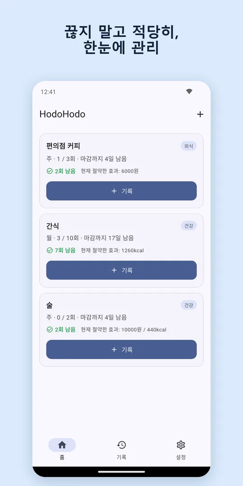
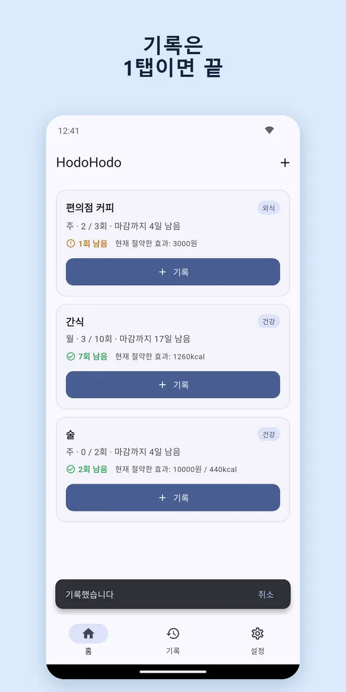
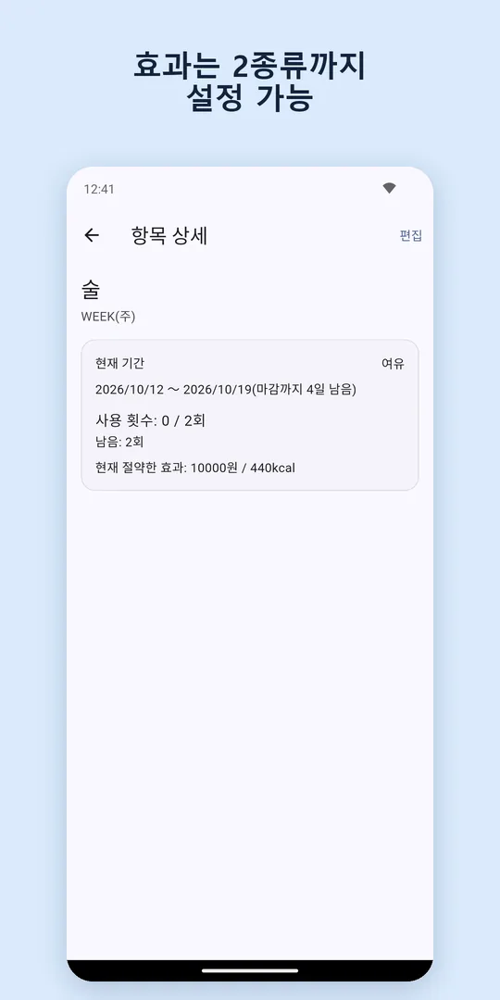
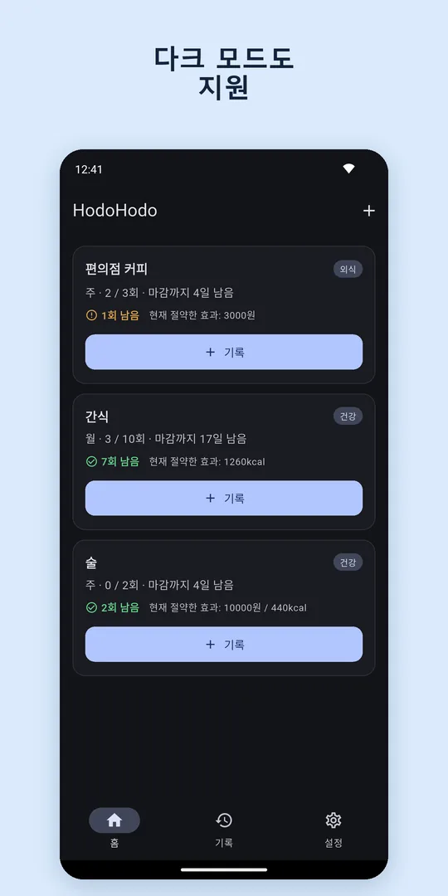
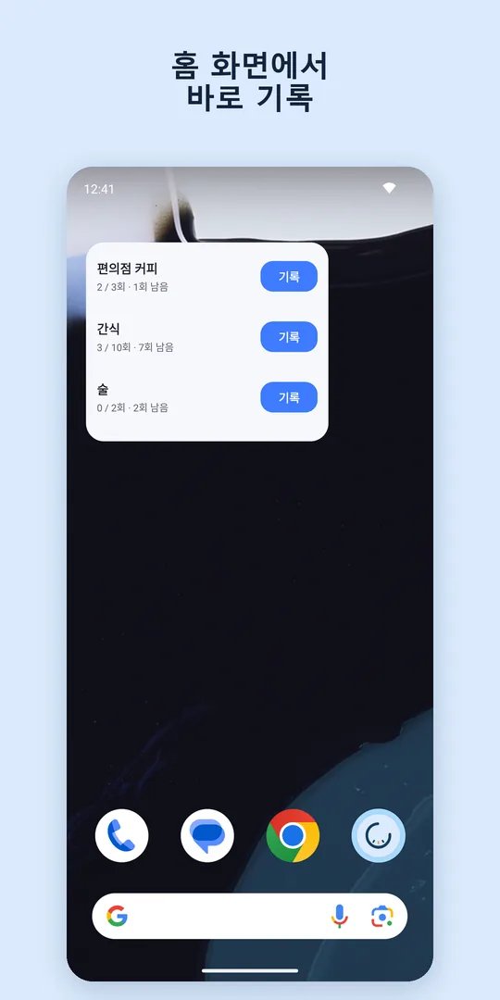

끊지 말고,
적당히.
커피, 술, 간식, 게임, 쇼핑. 끊고 싶진 않지만 줄이고 싶은 습관에 '주 3회까지' 같은 상한을 정하고 1탭으로 기록하는 카운터 앱입니다.
Google Play에서 무료 다운로드Android · 무료(항목 3개까지) · 로그인 불필요

상한을 정하고 1탭으로 기록
'하루 3회', '주 5회', '월 10회'. 기간과 횟수만 정하면 버튼 한 번이면 끝. 남은 횟수를 한눈에 확인할 수 있어요.
아낀 만큼 눈에 보이게
상한보다 적게 쓴 횟수를 금액·kcal·분 등으로 환산합니다. '이번 주 커피값 6000원 절약'처럼요.
홈 화면에서 바로 기록
위젯을 두면 앱을 열지 않고 기록할 수 있어요. 기간이 끝나면 자동으로 0회부터 다시 시작합니다.
화면




이런 분께 추천해요
- 커피값과 음료 지출을 줄이고 싶은 분
- 금주가 아니라 절주로 횟수를 조절하고 싶은 분
- 간식을 '0'이 아니라 '주 3회까지'로 하고 싶은 분
- 연속 기록이 끊기면 의욕이 사라지는 분
- 회원가입 없이 간단히 기록하고 싶은 분
자주 묻는 질문
무료로 쓸 수 있나요?
무료 버전은 항목을 3개까지 등록할 수 있습니다. 항목 무제한 플랜(월정액 또는 1회 구매)은 항목 수 제한만 없애며 기능은 같습니다. 무료 버전에는 배너 광고가 표시됩니다.
기록은 어디에 저장되나요?
기록 데이터는 기기에만 저장되며 서버로 전송되지 않습니다. 기기 변경 시에는 백업 파일을 내보내 사용할 수 있습니다.
아이폰 버전이 있나요?
iPhone / iPad 버전은 App Store 출시를 준비 중입니다. 출시되면 이 페이지에서 알려 드릴게요.